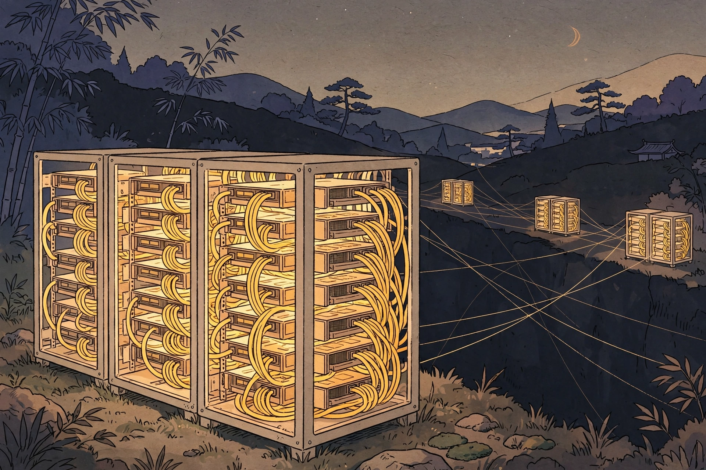

Monday, September 28, 2026
The whole of multi-node training comes down to one ratio: eighteen to one.

Builds on: ring all-reduce, ZeRO/FSDP, tensor parallelism, pipeline parallelism — the parallelisms that decide where traffic lives.
A GPU talks to the seven neighbors in its own node over NVLink at 900 GB/s — but to GPUs in the next rack over InfiniBand at roughly 50 GB/s per direction. That 18× gap is the single most important number in distributed training.
The steps are cliffs. At the top, a GPU reads its own HBM at 3.35 TB/s. Inside the node, NVLink 4 runs 900 GB/s bidirectional (NVLink 5 on the B200 doubles it to 1.8 TB/s). Then the first cliff: PCIe Gen5 manages about 128 GB/s. Then the second, bigger one: a single InfiniBand NDR link carries roughly 50 GB/s per direction.
| Hop | Fabric | Bandwidth (per GPU) |
|---|---|---|
| GPU to its own memory | HBM3 (H100) | ~3.35 TB/s |
| GPU to GPU in the node | NVLink 4 (NVLink 5) | 900 GB/s (1.8 TB/s), bidirectional |
| GPU to CPU or other devices | PCIe Gen5 x16 | ~128 GB/s |
| GPU to GPU across nodes | IB NDR 400 | ~50 GB/s per direction |
This ladder is the real answer to a question the earlier lessons kept deferring: where parallelism lives is where the traffic lives. Tensor parallelism's all-reduce traffic is heavy, so it stays inside the node on NVLink. Data-parallel gradient syncs ride the slow fabric across nodes. That is not a preference; it is the ratio doing the deciding.
It is also why Meta's clusters matter here: they built two 24,576-H100 clusters side by side — one InfiniBand, one RoCEv2 — and the Ethernet cluster matched InfiniBand's training throughput. The interview question is no longer "IB or Ethernet" but "how do you keep the fabric lossless and uncongested at scale?"
Between nodes the traffic moves by RDMA, and the library choosing how it moves is NCCL. It is not just "the all-reduce library": for every collective it picks a transport (fastest available — NVLink in-node, IB RDMA across nodes, TCP as fallback), an algorithm, and a protocol.
The algorithm is the bandwidth-vs-latency tradeoff. Ring takes 2(N−1) steps and
keeps every link busy, so it wins for large messages. Tree takes
2·log₂N steps, so it wins for small ones — the crossover sits around
a few megabytes across nodes. On NVSwitch systems there are also in-network options: NVLS lets the
switch do the reduction itself, and CollNet hands the reduction to the InfiniBand switch.
A 13B-class training step moves 52 GB of gradients across 128 GPUs. A ring all-reduce over that fabric costs about 2.1 seconds of raw communication — longer than the step's entire compute. Training only works because of overlap. Gradients arrive bucket by bucket during the backward pass, so each bucket's all-reduce fires on a separate stream while the next bucket still computes. The 2.1 seconds get interleaved behind roughly 4 seconds of compute, and the step pays only the exposed tail.
Connects to: the diagnostic questions interviewers actually ask when step time jumps with scale — (1) which phase binds, comm or compute; (2) is the comm exposed or hidden. Check overlap coverage before ever saying "buy more network."
See the full presentation: NVLink, InfiniBand, and NCCL — Letter brief
— The Infra Notebook